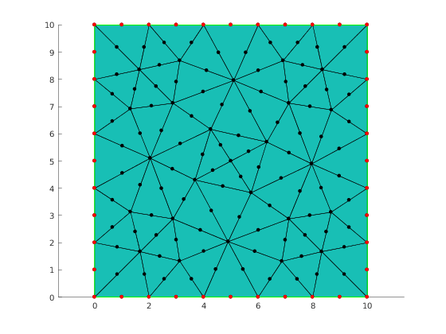
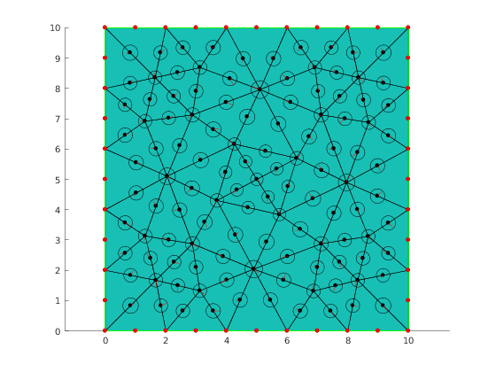
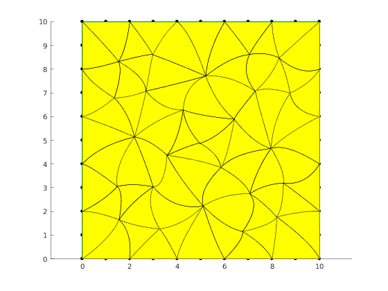

Contents
Illustrate how to randomly shake internal nodes
clear variables;
Crete Mesher object
When Mesher object is created it takes care of initializing interface to GMSH mesh generator
mesher = mp.Mesher();
Create object describing geometric model to be meshed
L = 10; geom = mp.geoms.SquareGeom('my_domain', struct('da', L));
Generate Mesh object
Ne = 5; meshingparams.lc = L/Ne; meshingparams.order = 2; mesh = mesher.generate(geom, meshingparams);
Visualize mesh
viewer = mp.Viewer(); viewer.show(mesh);
Selecting nodes
selector.b_south = 0;
selector.b_north = 0;
selector.b_west = 0;
selector.b_east = 0;
nodesTag = mp_tag_region_nodes(mesh, selector, 'min', 1);
boundaryNodes = find(nodesTag==0);
internalNodes = find(nodesTag==1);
boundaryPts = mesh.nodes(boundaryNodes, :);
viewer.showPoints(boundaryPts);
radius = L*ones(mesh.countNodes(), 1);
 Iterate over elements and calculate maximum allowabel radius
for i=1:mesh.countElems() nodes = mesh.elemNodes(i); nen = length(nodes); pairs = combnk(1:nen, 2); for p = pairs' n = nodes(p); nodesDist = norm(diff(mesh.nodes(n,:), 1)); radius(n) = min(radius(n), nodesDist*[1;1]); end end radius = 0.3*radius; direction = 2*pi*rand(mesh.countNodes(), 1) distance = radius.*(0.5+0.5*rand(mesh.countNodes(),1)); u = distance.*[cos(direction), sin(direction)]; hold on for i=1:mesh.countNodes if nodesTag(i) xy = mesh.nodes(i, 1:2); r = radius(i); circle = [xy(1)-r, xy(2)-r, 2*r, 2*r]; rectangle('Position', circle, 'Curvature', [1,1]); xy(end+1,:) = [xy + u(i, :)]; line(xy(:,1), xy(:,2), 'Color', 'red'); end end mesh.nodes(internalNodes, 1:2) = mesh.nodes(internalNodes, 1:2)+ u(internalNodes, :); viewer.stackFigure(); viewer.show(mesh); viewer.plot_curved_elements(mesh, 70); % Report demo status mp_manage_demos('report', 'shake_internal_nodes', true);
direction =
5.4734
2.2040
4.3073
1.8482
3.3340
5.2303
3.7541
2.1068
1.8801
2.8437
2.6556
2.2595
3.5080
4.6656
2.6662
2.6977
0.7846
0.1535
1.8233
1.9950
4.1073
6.0126
5.8794
2.8770
1.5110
4.7997
4.7710
4.6536
4.6727
0.6655
4.2824
2.9108
1.3331
0.6190
5.1747
1.0996
1.0277
4.1845
5.6196
3.2456
4.4152
0.9650
5.9907
3.3985
4.2709
0.2297
5.0844
4.7037
0.7552
3.2990
2.0473
3.4334
2.5062
2.6081
1.1356
1.6046
0.1290
5.8036
4.1073
5.8598
1.0274
5.7874
4.9930
3.6279
2.7648
1.6186
4.7246
1.4368
0.4033
4.8213
4.2173
4.4938
4.0342
2.6330
2.4552
5.1280
1.9945
5.1179
4.9579
5.3549
3.1770
3.9940
5.9746
2.7895
0.3771
5.4460
3.9659
2.2310
6.2644
1.4085
4.0995
3.8013
2.4331
0.8934
0.1579
2.6459
1.1567
4.5602
2.3271
5.2877
4.6133
3.5879
1.1112
6.0154
1.6671
5.8093
1.4060
2.3472
0.5498
4.0220
1.1348
0.2831
4.5438
2.1830
4.1508
2.4119
3.9417
0.1360
5.7213
5.0301
4.6863
5.1089
2.4084
3.8785
3.6159
3.3304
1.7283
1.5622
2.8377
1.4308
5.0545
6.1959
0.1884
3.3657
0.5471
5.0397
6.2150
0.4206
5.9024
0.1142
4.2967
4.9244
3.3561
5.5629
5.6486
3.9329
0.8663
1.3685
1.1444
0.2628
0.6719
3.8732
5.9041
2.2271
2.5801
6.1848
5.9412
 